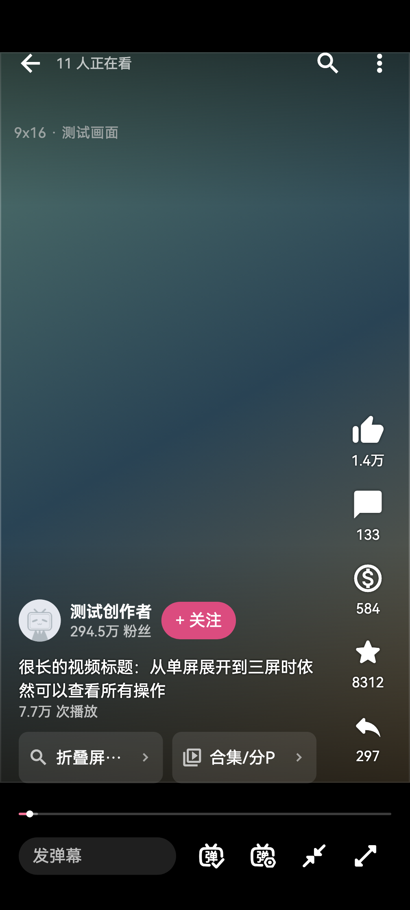
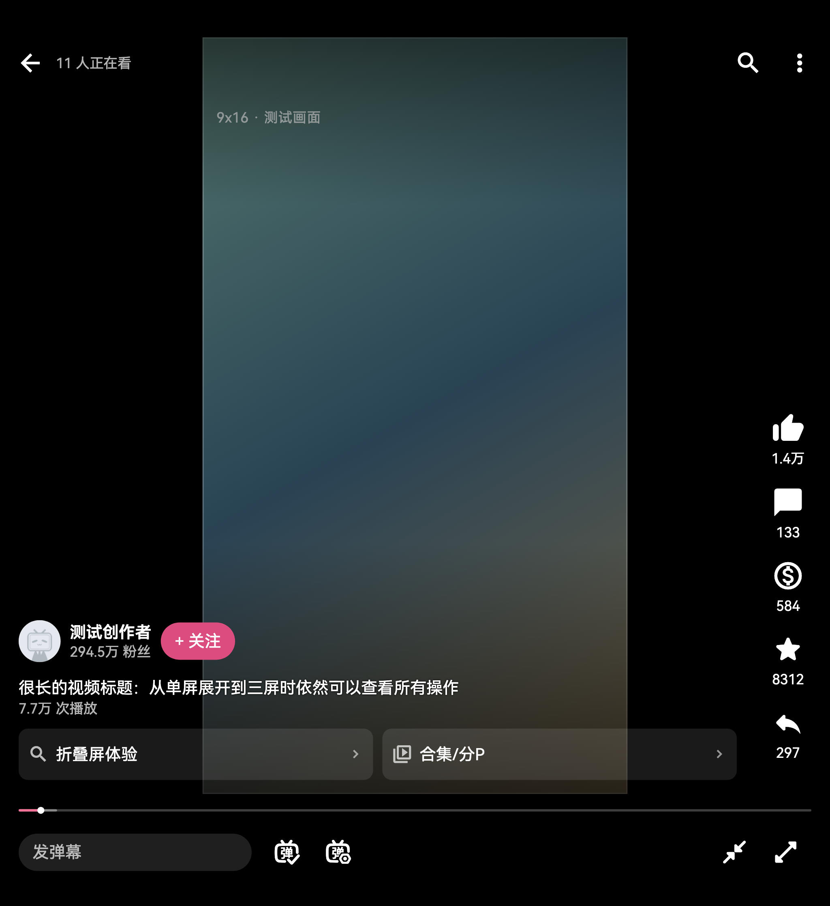
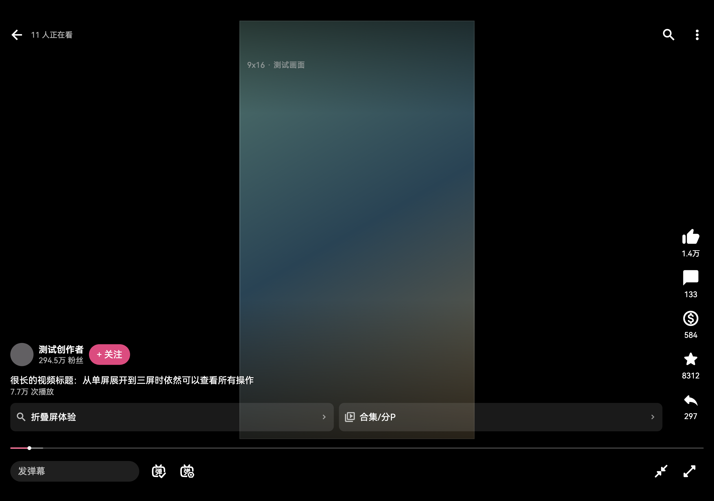

模拟 DPR 2.875 · UI 缩放 1.0

模拟 DPR 2.875 · UI 缩放 1.0

实测 DPR 2.875 · UI 缩放测试值 1.0

三张测试图片均直接按原生像素渲染，所有图片使用同一个显示倍率。三屏 DPR 2.875 来自设备实测；单屏和双屏在此图采用 2.875 作为模拟输入，实际密度仍待采集。使用设备 HarmonyOS Sans / Sans SC 字体，安全区为测试值；画面与账户数据都是测试素材，不能替代三个形态的实机验收。
100% 表示一张图像像素对应一个浏览器 CSS 像素，并非设备实际毫米大小。原图没有分别缩到相同宽度。


